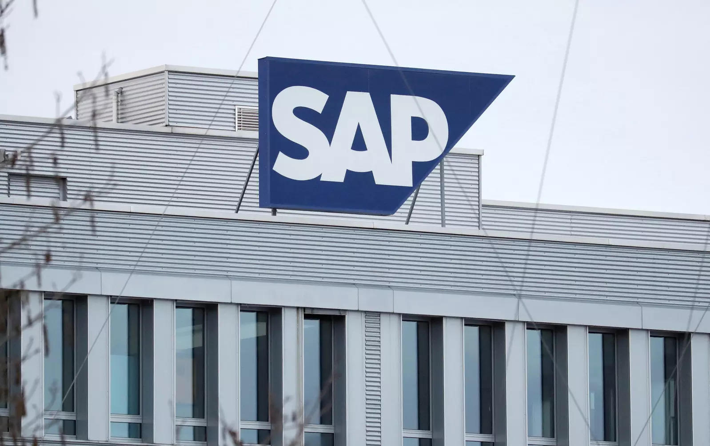

Business

SAP said on Thursday it planned to cut 3,000 jobs, or 2.5 per cent of its global workforce, and explore the sale of its remaining stake in Qualtrics, as the Germany software company looks to cut costs and focus on its cloud business. SAP is the latest tech company to cut jobs after companies including Alphabet’s Google, Microsoft and Amazon announced thousands of layoffs to cut costs as they brace for tougher economic conditions.
Education

According to officials, the G20 education working group will hold a seminar ahead of the meeting at the research park of the Indian Institute of Technology(IIT) in Chennai on January 31 on the topic “tech enabled learning more inclusive, qualitative and collaborative at every level”. “The seminar will be attended by the delegates from all G20 nations.
Entertainment
Parineeti Chopra had a mixed 2022 in terms of Box Office performances. While her Code Name Tiranga opposite Harrdy Sandhu proved to be a disaster, her other film ‘Uunchai’ was among one of the few films this year that not only garnered praise from the critics and the audiences but also managed to earn decently at the Box Office. Now the actress has been conferred with the prestigious award for Outstanding Achievement in the field of Arts, Entertainment, and Culture by the British Council.
Science
SpaceX’s Starship, the largest rocket ever built, is set to make its first orbital flight in 2023. It is just one of a fleet of huge rockets due to launch in the next 12 months, along with Blue Origin’s New Glenn. Both firms are owned by billionaires – Elon Musk and Jeff Bezos, respectively – who hope to shape the future of space travel.Away from the private sector, government space agencies are also planning some exciting missions.